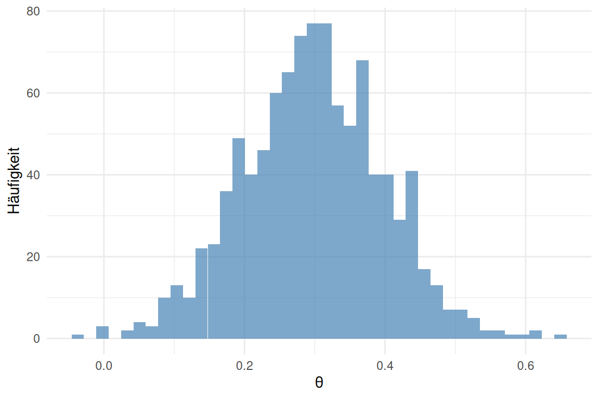

Titel der Arbeit
1 Einleitung
Die Bayes-Statistik bietet gegenüber der frequentistischen Inferenz wichtige Vorteile (Kruschke, 2014; McElreath, 2020). Im Folgenden wird ein einfaches Beispiel vorgestellt.
Direktes Zitieren mit Seitenzahl: Gelman et al. (2013, S. 42) betonen, dass Prior-Verteilungen explizit begründet werden sollten.
Zitat in Klammern: Posterior-Verteilungen lassen sich direkt probabilistisch interpretieren (Kruschke, 2014, S. 15).
2 Methode
Die Daten wurden mit R (R Core Team, 2024) und dem Paket bayesplot (Gabry et al., 2019) ausgewertet.
3 Ergebnisse
Wie in Abbildung 1 zu sehen, liegt der Posterior-Median bei 0.3 (90%-HDI: 0.14 – 0.45).
4 Diskussion
Die Ergebnisse replizieren frühere Befunde (vgl. McElreath, 2020, Kapitel 3).
5 Literatur
Gabry, J., Simpson, D., Vehtari, A., Betancourt, M., & Gelman, A. (2019). Visualization in Bayesian workflow. Journal of the Royal Statistical Society: Series A, 182(2), 389–402. https://doi.org/10.1111/rssa.12378
Gelman, A., Carlin, J. B., Stern, H. S., Dunson, D. B., Vehtari, A., & Rubin, D. B. (2013). Bayesian Data Analysis (3. Aufl.). CRC Press.
Kruschke, J. K. (2014). Doing Bayesian Data Analysis: A Tutorial with R, JAGS, and Stan (2. Aufl.). Academic Press.
McElreath, R. (2020). Statistical Rethinking: A Bayesian Course with Examples in R and Stan (2. Aufl.). CRC Press.
R Core Team. (2024). R: A Language and Environment for Statistical Computing. R Foundation for Statistical Computing. https://www.R-project.org/